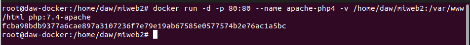

Tarea 3 - Almacenamiento en Docker - IESGN
Realizado por Pablo R.
Vamos a trabajar con volúmenes docker:
1. Crear un volumen docker que se llame miweb.
docker volume create miweb
Creamos el volumen mi web.
2. Crea un contenedor desde la imagen php:7.4-apache donde montes en el directorio/var/www/html (que sabemos que es el DocumentRoot del servidor que nos ofrece esa imagen) el volumen docker que has creado.
docker run -d -p 80:80 --name apache-php2 -v miweb:/var/www/html php:7.4-apache
Creamos el php asociado al volumen miweb.
3. Utiliza el comando docker cp para copiar un fichero index.html en el directorio /var/www/html.
nano /home/daw/index.html docker cp /home/daw/index.html apache-php2:/var/www/html

Creamos el archivo index.html en nuestro equipos con nano y copiamos dicho fichero a la máquina docker.
Copiamos el archivo index.html al contenedor.
4. Accede al contenedor desde el navegador para ver la información ofrecida por el fichero index.html.
docker start apache-php2

Iniciamos el contenedor y accedemos por el navegador.
5. Borra el contenedor
docker stop <id_contenedor> docker rm <id_contenedor>
Paramos el contenedor y eliminamos el contenedor.
6. Crea un nuevo contenedor y monta el mismo volumen como en el ejercicio anterior.
docker run -d -p 80:80 --name apache-php3 -v miweb:/var/www/html php:7.4-apache
Creamos un nuevo contenedor y montamos el mismo volumen del ejercicio anterior.
7. Accede al contenedor desde el navegador para ver la información ofrecida por el fichero index.html. ¿Seguía existiendo ese fichero?

Sigue existiendo pues reutilizamos el volumen anterior.
Vamos a trabajar con bind mount:
1. Crea un directorio en tu host y dentro crea un fichero index.html.
mkdir /home/daw/miweb2 nano /home/daw/miweb2/index.html

Creamos el directorio y el fichero index.
2. Crea un contenedor desde la imagen php:7.4-apache donde montes en el directorio/var/www/html el directorio que has creado por medio de bind mount.
docker run -d -p 80:80 --name apache-php4 -v /home/daw/miweb2:/var/www/html php:7.4-apacheCreamos el contenedor con bind mount.

3. Accede al contenedor desde el navegador para ver la información ofrecida por el fichero index.html.

Accedemos a la web y observamos que tenemos la web funcionando.
4. Modifica el contenido del fichero index.html en tu host y comprueba que al refrescar lapágina ofrecida por el contenedor, el contenido ha cambiado.
nano /home/daw/miweb2/index.html

Modificamos el archivo en el host.

Observamos el cambio.
5. Borra el contenedor
docker stop <id_contenedor> docker rm <id_contenedor>
Borramos el contenedor.
6. Crea un nuevo contenedor y monta el mismo directorio como en el ejercicio anterior.
docker run -d -p 80:80 --name apache-php5 -v /home/daw/miweb2:/var/www/html php:7.4-apache
Creamos el contenedor de nuevo.
7. Accede al contenedor desde el navegador para ver la información ofrecida por el ficheroindex.html. ¿Se sigue viendo el mismo contenido?

Observamos que el contenido se sigue visualizando.
 created with the evaluation version of
Markdown Monster
created with the evaluation version of
Markdown Monster